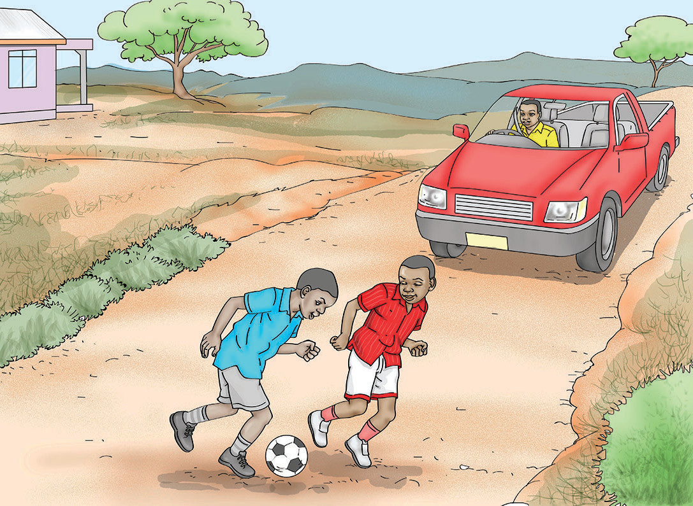

Soma hadithi ifuatayo, kisha jibu maswali.
Bibi Chausiku
Hapo zamani za kale, alikuwepo bibi mmoja. Jina lake aliitwa Bibi Chausiku. Alipenda kufanya kazi kwa bidii. Siku moja, aliamka mapema kwenda porini kutafuta kuni. Alipofika porini, alikusanya kuni na kuzifunga kwa kamba. Wakati akitembea porini, alichomwa na mwiba mguuni. Akakaa chini kwa huzuni. Mara, alipita kijana mmoja. Kijana huyo aliitwa Jumanne. Jumanne alimsalimia bibi. Bibi aliitikia salamu na kumwomba amtolee mwiba. Bibi alisema, mjukuu wangu, ninaomba unitolee mwiba. Jumanne alimsogelea bibi na kumtolea mwiba. Bibi alimshukuru sana. Alimwambia, asante sana mjukuu wangu!